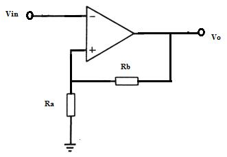
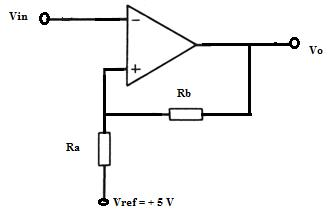

Post Test
Q.1. A Schmitt Trigger is designed with upper threshold level VUT = 0 V &
hysteresis width VH = 0.2 V that converts a 1 KHz sine wave of amplitude 4Vpp into a square wave.
Calculate the VLT.
VLT = 0.2 V
VLT = 4.0 V
VLT = -0.2 V
VLT = -4.0 V
Q.2. An inverting Schmitt Trigger has R1 = 50 KΩ, R2 = 100 Ω, Vref = 0 V, Vin = Vpp sine wave and saturation voltage = ± 14 V.
Determine the threshold voltages VUT & VLT.
VUT = 9 V & VLT = - 9 V
VUT = 28 V & VLT = - -28 V
VUT = 14 V & VLT = - 14 V
None Of these.
Q.3. For the inverting Schmitt Trigger derive the equations
VH{Ra/(Ra + Rb)} [ + Vsat - (- Vsat)]

Q.4. In the Schmitt shown if the ratio Rb/Ra is increased, then
VHis reduced but Vsat remains unchanged.
VL is reduced but VH remains unchanged.
VH is increased but Vsat remains unchanged.
No effect on the circuit.
Q.5. Given Ra = 2 KΩ and Rb = 7.5 KΩ. Determine UTP and LTP and hysteresis width of the
Schmitt Trigger for Vsat = ± 13.5 V.
